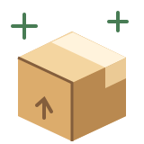

今天，
想練哪一招？
換個角度看事情、把東西記住，或把「等一下」換成「先一下」。
三款小遊戲，各練一招。沒有排行榜，照自己的步調玩。
換位選擇
雙標大挑戰
替別人訂的規則，換自己還能接受嗎？故事模式或完整挑戰，最後再看標準有沒有變。
換你承受 ↗
記憶搬家三秒就忘記
看一眼，再把物品放回原位。6 秒輕鬆、3 秒挑戰，還有鏡像魔王局。
幫記憶搬家 ↗NEW・啟動練習
等一下星球
拆掉巨大任務、送走藉口怪，幫火箭起飛！玩完可帶一個現實小任務，先做兩分鐘。
先一下就好 ↗這裡是娛樂與練習，不是醫療診斷或治療。分數不代表記憶力、人格或心理健康。
拖延遊戲的自訂任務只留在這個分頁，不會上傳或保存。